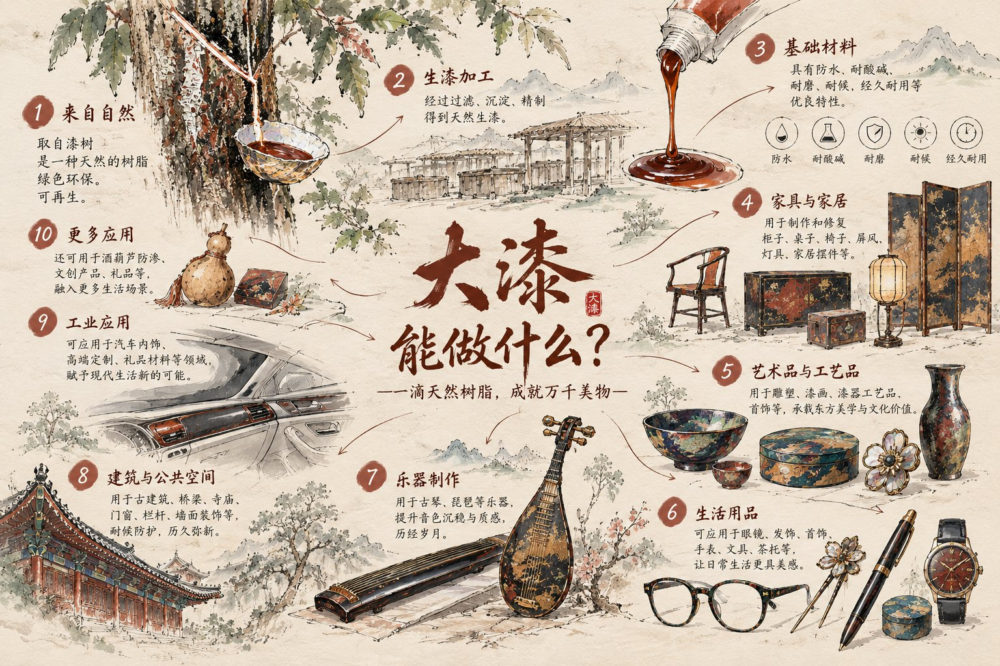

漆可用，故割之。
—— 《庄子 · 人间世》
它从秦岭深处一棵树的伤口里流出来，
然后，比我们所有人都活得更久。
第一章 · 割漆
农历五月到八月，天不亮，平利牛王沟的漆农就背着漆刀进山。在漆树上划开一道 V 字口，下面插一片蚌壳，等树把“眼泪”流出来。
现在轮到你：在左边的树皮上用手指或鼠标划一刀，然后等一等，看看会发生什么。
老话讲“百里千刀一斤漆”。一刀下去能流出十几克，可一棵漆树要长 8 年才能开割，割完一季还得休养。漆农天不亮进山，翻山越岭一棵一棵地割，这句老话就是这么来的。
第二章 · 它是活的
刚流出的生漆像牛奶一样白。这时它还是“活的”：里面有漆酚，也有一种天然的酶，叫漆酶。
一个反常识
生漆不靠加热，也不靠水分蒸发，靠的是漆酶把漆酚“手拉手”连成立体的网。温度 20 到 30℃、湿度 70% 到 85%，漆酶才肯工作。所以匠人要把漆器放进专门的“荫房”，像养一个生命。
第三章 · 八千年
← 左右拖动时间轴 →
浙江萧山出土，已知最早的漆器之一。那时还没有文字，中国人已经在用漆。
红色的漆，至今还能看出光泽。中国人对“朱与黑”的审美，从这里开始。
两千多年地下，漆皮仍有光泽。
出土时光亮如新。木头早已脆弱，保护它的，是那层漆。
外黑内红，是中国最古老的礼器配色。
金州，就是今天的陕西安康。平利牛王漆，明清时成为贡漆。
袁永龄在秦巴漆乡创号，漆桶上画牛头，是为“牛王漆”。
平利大漆顺汉江、下汉口、出上海，漂洋过海。1976 年广交会，仍有日本商人点名要“平利牛王牌”。
从卖原料到做深加工的关键一跃。
第五代传人袁端姣从西安交大硕士毕业回乡，重建漆林。牛王生漆油漆技艺列入陕西省级非遗。
八千年的材料，戴在了当代人的脸上。
第四章 · 拖动时间
普通化学涂料
天然大漆
两张案几，一样漂亮。
示意动画，基于材料特性与出土文物，非实验数据。
第五章 · 一件漆器的诞生
先用木头、竹子或者麻布做出器物的“骨头”，叫作胎。
最后一道工序 · 推光
在漆面上来回擦动，把哑光的漆面推亮
第六章 · 大漆能做什么

从紫禁城的梁柱，到你鼻梁上的眼镜。点击图片可查看大图。
第七章 · 谁在守着这滴漆
从一棵漆树，到一件器物，全链路自己做。
市面上的同行，大多只做原料、只做器物、或者只做首饰。
陕西省级非遗 · 牛王生漆油漆技艺代表性传承人企业
参与制定行业标准 GH/T 1299-2020《漆树造林技术规程》、GH/T 1300-2020《漆树病虫害防治技术规范》
2025 德国 iF 设计奖 · 中国工艺美术百鹤奖新锐奖 · 陕西省“传世珍品” · 中国乡村工匠名师
科研合作：中国科学院 · 清华大学 · 西北农林科技大学 · 西安生漆研究所
终章 · 拓扇留名
这是天然大漆独有的“浮性”。画一盆水，拓一把只属于你的漆扇，再落上你的名字，让它和漆一样，活两千年。
一、点一下水面：滴一滴彩漆
二、按住拖动：用漆针划出花纹
三、写下名字，点“拓扇落款”
每一把漆扇的花纹，世界上只有一把。